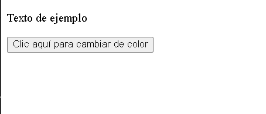
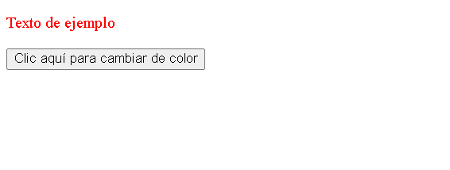

Los eventos son parte fundamental de la interración entre el usuario y una página WEB. Permiten que el código JavaScript responda a acciones realizadas por el usuario o por el navegador. En JavaScript, los eventos son representados como objetos que contienen información sobre el evento que ha ocurrido. Los eventos pueden ser de diferentes tipos, como click de ratónn, pulsaciones de teclas, cambios de estado, carga de página, etc. Cada tipo de evento puede estar asociado a un elemento HTML específico.
Escucha de eventos.
Para capturar y responder a un evento, debes escuchar dicho evento en un elemento específico del DOM (Document Object Model). Esto se hace mediante la función: addEventListener.
La función addEventListener es una herramienta esencial en JavaScript para manejar eventos y crear interactividad en tus documentos. Permite vincular funciones conocidas como manejadores de eventos, a elementos HTML específicos para responder a diferentes tipos de acciones realizadas por el usuario.
Para comenzar con la práctica inicial necesitaremos un documento HTML con el archivo JavaScript vinculado. Dentro del body agregaremos un texto que diga Texto de práctica, al cual asignaremos el atributo class con la declaración textoEjemplo, y además un botón que también deberá tener un atributo class, en este caso con la declaración botonEjemplo.
<!DOCTYPE HTML>
<html lang="en">
<head>
<title>Document</title>
</head>
<body>
<p class="textoEjemplo">Texto de ejemplo</p>
<button class="botonEjemplo">Click aquí para cambiar de color</button>
<script src="main.js"></script>
</body>
</html>Ahora continuaremos con la codificación en JavaScript, donde seleccionaremos los dos elementos HTML previamente creados y los almacenaremos en dos variables constantes: Una llamada boton y la otra texto.
const boton = document.querySelector(".botonEjemplo");
const texto = document.querySelector(".textoEjemplo");
El objetivo de nuestro programa de ejemplo es lograr que, al hacer clic en el botón, el color del texto cambie. Para ello utilizaremos nuestra variable boton, seguido de un punto, y luego la función addEventListener .
const boton = document.querySelector(".botonEjemplo");
const texto = document.querySelector(".textoEjemplo");
boton.addEventListener
Abriremos parentesis y, como primer argumento, colocaremos el evento que se escuchará; en este caso será un click, por lo que escribiremos entre comillas simples 'click', que se obtiene con la combienación alt + 39.
const boton = document.querySelector(".botonEjemplo");
const texto = document.querySelector(".textoEjemplo");
boton.addEventListener('click'
Una vez llamado el evento, debemos agregar el segundo parámetro separado por una coma ,. Este segundo parámetro en addEventListener será una función, que puede escribirse de distintas formas: funciones declarativas (Aquellas que requieren un nombre), funciones de expresión o funcion flecha (Arrow function). En este ejemplo usaremos Arrow function.
const boton = document.querySelector(".botonEjemplo");
const texto = document.querySelector(".textoEjemplo");
boton.addEventListener('click', ()=>{
});
Solo nos resta modificar el estilo del texto dentro de nuestra función, la cual se ejecutará únicamente cuando el botón detecte el evento de un click sobre el elemento. Para hacerlo, llamaremos a la variable texto, seguido de un punto, luego al método style, nuevamente un punto y, a continuación, el atributo color, al cual le asignaremos con un igual = el color en ingles, recordando que este debe ir entre comillas.
const boton = document.querySelector(".botonEjemplo");
const texto = document.querySelector(".textoEjemplo");
boton.addEventListener('click', ()=>{
boton.style.color = "red";
});Vista documento HTML:

Despues del Evento click

mouse:click: Se activa cuando se hace clic en un elemento.
dblclick: Se activa cuando se hace doble clic en un elemento.
mousedown: Se activa cuando se presiona un botón del ratón sobre un elemento.
mouseup: Se activa cuando se suelta un botón del ratón sobre un elemento.
mouseover: Se activa cuando el puntero del ratón se mueve sobre un elemento.
mouseout: Se activa cuanto el puntero del ratón se mueve fuera de un elemento.
mousemove: Se activa cuando el puntero del ratón se mueve mientras está sobre un elemento.
contextmenu: Se activa cuando se hace clic con el botón drecho del ratón.